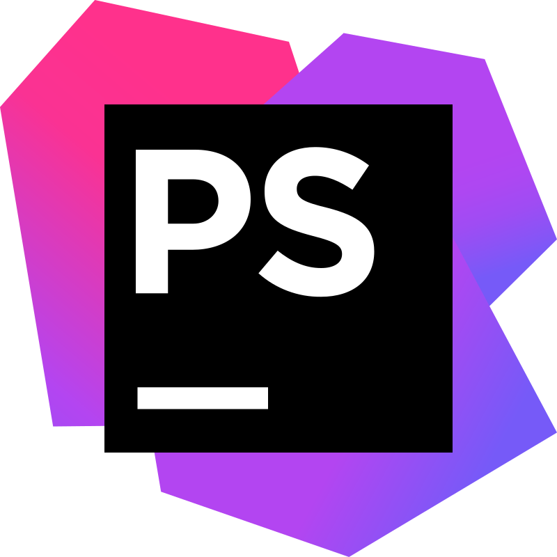

Portfolio de Justine BLIN
Qui suis-je ?
Développeuse en informatique passionnée par les nouvelles technologies, je suis actuellement en Bachelor Développement & IA. Curieuse et créative, j'aime concevoir des solutions innovantes et relever des défis techniques.
Mes projets
France Mobilier
Site e-commerce MVC pour une société de mobilier avec administration intégrée.
Speedcubing
Site pour l'Association Française de SpeedCubing avec chronomètre et classement en ligne.
Panada Food
Site web pour un restaurant, développé en binôme lors d'un stage de 6 semaines.
Application météo
Application web affichant la météo en temps réel via l'API OpenWeather.
Technologies et Outils
